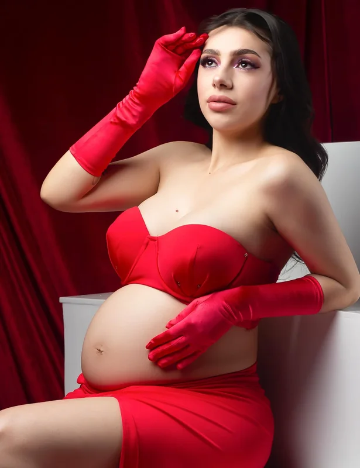

01
Retrato personal
Tu expresión, tu momento, tu forma de estar en el mundo. En estudio o con luz natural.
Quiero mi retrato ↗LA PAZ & ENsenada · MÉXICO
UNA MIRADA, MUCHAS HISTORIAS


Fotografía que habla de ti.
Por Alexa Lara, fotógrafa en La Paz.
NO SOLO CÓMO SE VE.
TAMBIÉN CÓMO SE SIENTE.
Una expresión, una luz inesperada, una etapa que cambia. La fotografía nos permite detenernos ahí. Y volver, todas las veces que queramos.
01 — EL PORTAFOLIO
Una selección de mi trabajo
Cada persona, un universo.
Cada fotografía, una forma de mirarlo.
Una nueva historia está por llegar a esta colección.

02 — MI MIRADA
“Cada foto cuenta una historia, tu historia.”
Entre La Paz y Ensenada, mi trabajo explora el retrato, la luz y las distintas maneras de contar quiénes somos. Desde una sesión al aire libre hasta una idea que toma forma en el estudio.
Este es un espacio para compartir esa mirada. Y para imaginar juntos lo que viene.
Conoce mi día a día03 — TU SESIÓN
El punto de partida es tu historia
No necesitas tenerlo todo resuelto.
Una idea, una ocasión o las ganas de crear
son un buen comienzo.
Tu expresión, tu momento, tu forma de estar en el mundo. En estudio o con luz natural.
Quiero mi retrato ↗
Una idea que juega con la luz, el color y la composición. Imágenes con una voz propia.
Tengo una idea ↗
Las etapas que llegan, los vínculos que crecen y las personas que hacen especial tu historia.
Quiero recordarlo ↗Qué te gustaría fotografiar, dónde y cuándo. Compartimos ideas para encontrar el punto de partida.
Conversamos sobre el estilo, la locación y los detalles de tu sesión.
Un momento para estar presente, explorar y dejar que la fotografía cuente tu historia.

04 — CREAMOS ALGO
Cuéntame qué tienes en mente.
Tu próxima historia empieza con un hola.
CUÉNTAME TU IDEA